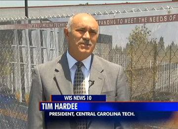
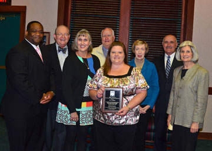
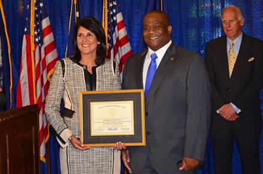

Congratulations to the graduating South Carolina Manufacturing Certification class! Students completed a 200 hour program to help prepare them for jobs in advanced manufacturing. Visit www.cctech.edu/scmc for upcoming classes & scholarship information. Next class begins August 11th.

Industry Expansion provides major benefits in Sumter.
CCTC Breaks Ground for Advanced Manufacturing Technology Training Center
Central Carolina Technical College hosted a groundbreaking ceremony June 19th at the old Walmart building on Broad Street in Sumter.

CCTC Awards Convocation
CCTC held it's annual awards convocation Thursday evening, April 17 at Sumter Opera House.

Governor's Professor of the Year!
Congratulations to Chris Hall, Academic Program Manager and Instructor for Criminal Justice Technology at CCTC! On April 23rd, Chris was honored at the State House as the 2014 South Carolina Governor's Professor of the Year for two-year public and independent colleges in South Carolina.